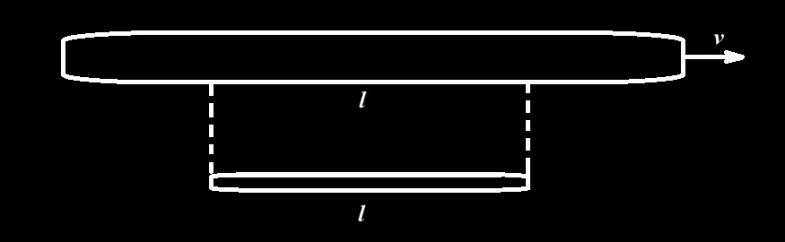
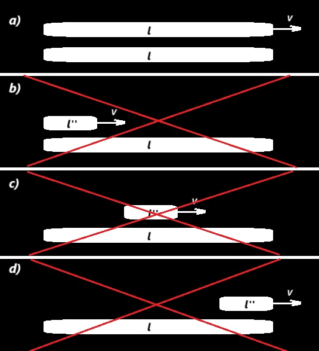
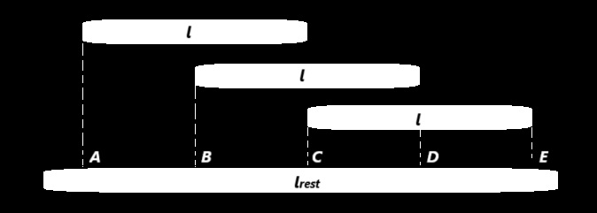
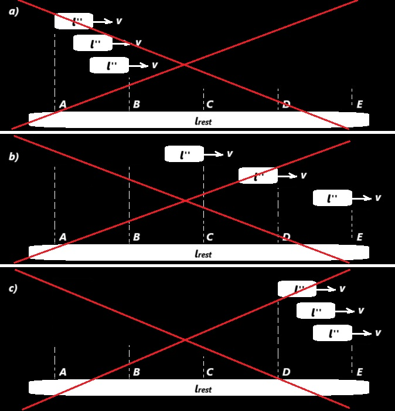
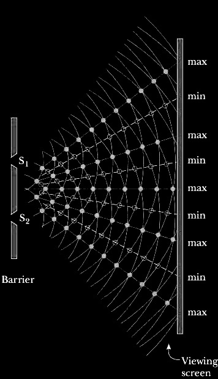
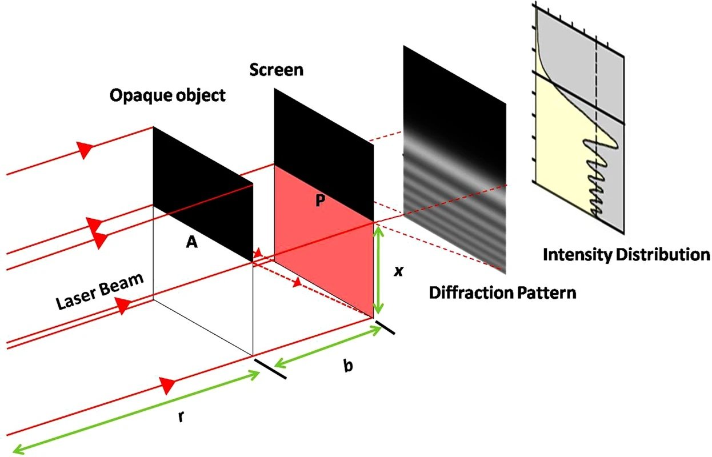
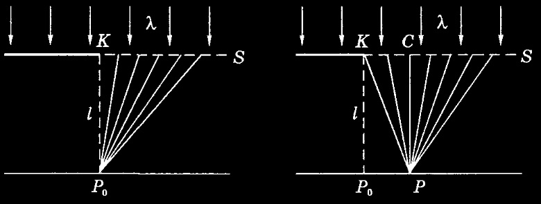
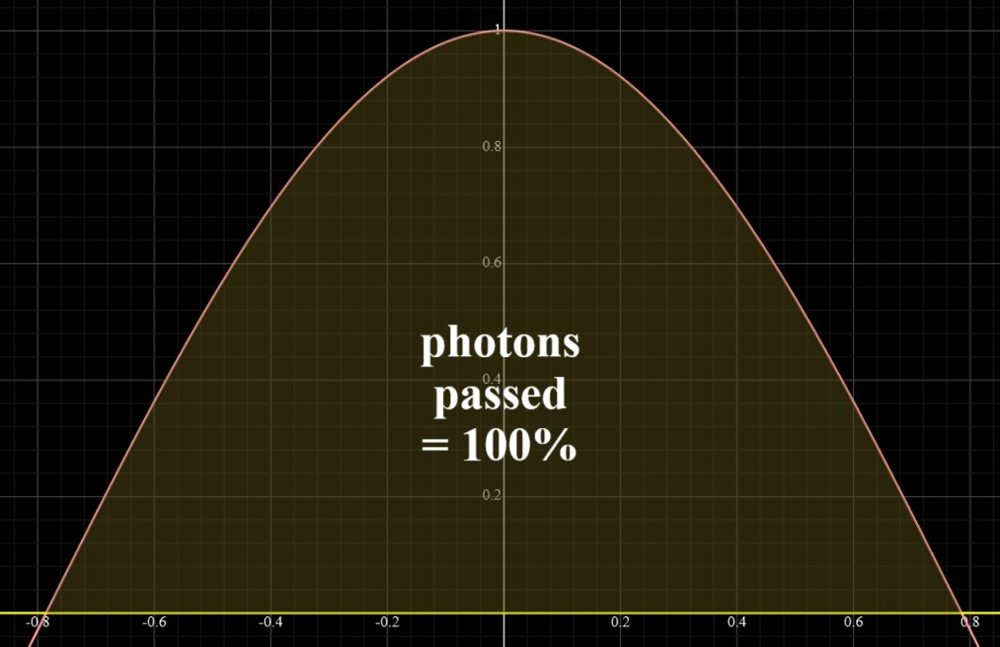
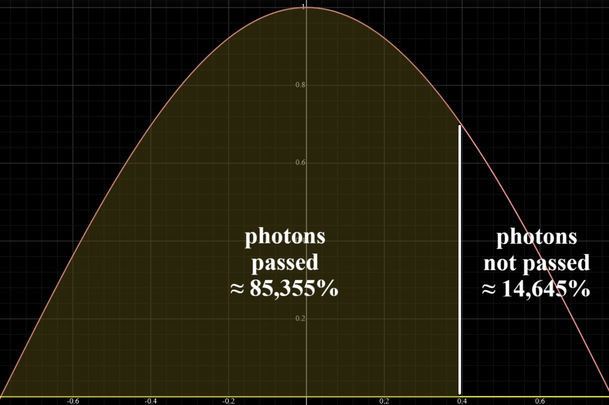

Две великие теории, базирующиеся на общей интерпретации интерференции. Что не так с интерпретацией корпускулярно-волнового дуализма и вытекающие из этого последствия
Общая основа для специальной теории относительности и для квантовой механики. Что из себя представляет интерференция физически на самом деле¶
Основы специальной теории относительности. Инерциальная система отсчёта. Неподвижная система отсчёта¶
Для дальнейшего описание необходимо ввести новое понятие.
Неподвижная система отсчета (НСО) - это инерциальная система отсчета (ИСО) связанная с объектом, характеризующимся нулевым сдвигом реликтового излучения (нулевой дипольной анизотропией). НСО может быть связана с разными объектами, но их относительная скорость равна нулю. Необходимо особо отметить, что НСО отличается от системы отсчета, связанной с Землей, всего на несколько сот километров в секунду (370 км/с). Это основная причина, по которой большинство вычислений, согласно теории относительности, близки к реальным результатам в экспериментах.
В дальнейшем нам понадобится несколько формул специальной теории относительности.
Коэффициент замедления времени или сжатия пространства:
\(1/\gamma= \sqrt{1 - \frac{v^2}{c^2}}\), (1)
где \(v\) это скорость объекта относительно ИСО или НСО.
Как известно, если ИСО \(K'\) движется относительно ИСО \(K\) с постоянной скоростью \(v\) вдоль оси \(x\), а начала пространственных координат совпадают в начальный момент времени в обеих системах, то прямые преобразования Лоренца имеют вид:
\(x'={\frac {x-vt}{\sqrt {1-v^{2}/c^{2}}}}\) , \(y' = y\) , \(z' = z\) , \(t'={\frac {t-(v/c^{2})x}{\sqrt {1-v^{2}/c^{2}}}}\), (2)
где \(c\) — скорость света, величины со штрихами измерены в системе \(K'\), без штрихов — в \(K\).
Что именно мы рассчитываем средствами специальной теории относительности¶
Описание мысленного эксперимента 1:
В НСО два космических корабля, находящихся в одном месте в начале мысленного эксперимента. Первый всегда покоится, а второй движется со скоростью \(v\) относительно НСО. В начале мысленного эксперимента часы на космических кораблях синхронизированы. Спустя время \(t_1\) по часам первого наблюдателя второй космический корабль пройдет расстояние \(l=vt_1\). Для наблюдателя на втором космическом корабле пройдет время \(t_2=t_1/\gamma\) из-за эффекта замедления времени. Фактически, если вдоль оси движения второго космического корабля расположить линейку, которая покоится в НСО, то второй наблюдатель по прошествии времени \(t_2\) зафиксирует на ней пройденное расстояние \(l\). Тогда рассчитаем, с какой скоростью удалялся космический корабль первого наблюдателя по часам второго наблюдателя: \(v'=l/t_2=v\gamma\). Это реальные (фактические) характеристики объектов - местоположения, длины, скорости и время на часах. То есть это характеристики объектов, которые мы рассчитали, а не видим. Для того чтобы видеть, нужно дополнительно учесть время на полет фотонов от источника до нужного наблюдателя. Однако за время полета этих фотонов местоположения и прочие реальные (фактические) характеристики объектов - изменятся. Выше мы не учитывали время на полет фотонов от источника до нужного наблюдателя.
Если для этого случая применить специальную теорию относительности с преобразованиями Лоренца для смены ИСО, то результат будет фундаментально иным и создающим математически верную иллюзию:
\(v''=l''/t_2=\frac {(l/\gamma)}{(t_1/\gamma)}=v\).
Однако мы прекрасно знаем, что \(l''=l/\gamma\) это лишь кажущаяся или иллюзорная длина линейки, а не реальная (фактическая/собственная) [14,15]. Это также означает, что \(v''\) тоже некая кажущаяся или иллюзорная скорость, а не реальная (фактическая). В результате при использовании здесь теории относительности мы получили именно кажущиеся или иллюзорные характеристики объектов, а не реальные (фактические). Здесь как раз в некоторой степени учитывается время на полет фотонов от источника до наблюдателя, а значит, за время полета этих фотонов местоположения и прочие реальные (фактические) характеристики объектов - изменятся. Получаем, что если нам требуется рассчитать реальные характеристики объектов, а не иллюзорные, то теорию относительности нельзя применять.
Непосредственно видимая длина¶
Что непосредственно видит наблюдатель второго космического корабля с точки зрения теории относительности? Фотоны из начала линейки A и из конца линейки B должны одновременно попасть в детектор (глаз наблюдателя). На рисунке 1 показано начало эксперимента, а на рисунке 2 конец эксперимента. На рисунках 1 и 2 расстояние между осью движения линейки и космическим кораблем показано лишь для наглядности, а на самом деле оно равно нулю.
Рисунок 1 – Начало эксперимента для наблюдателя второго космического корабля с точки зрения теории относительности
На рисунке 1 длина AB' это видимая непосредственно длина линейки с точки зрения теории относительности для наблюдателя второго космического корабля. AB' > AB.
Рисунок 2 – Конец эксперимента для наблюдателя второго космического корабля с точки зрения теории относительности
На рисунке 2 длина A'B это видимая непосредственно длина линейки с точки зрения теории относительности для наблюдателя второго космического корабля. A'B < AB.
Получаем в данном мысленном эксперименте видимая непосредственно длина линейки с точки зрения теории относительности для наблюдателя второго космического корабля находиться в интервале от A'B до AB' (A'B < AB < AB'), что не является константой \(l''\). Необходимо особо отметить, что из-за принципа относительности в специальной теории относительности на место наблюдателя второго космического корабля мы можем выбрать наблюдателя на Земле с определёнными незначительными допущениями. Соответственно этот наблюдатель будет видеть движущуюся линейку. Видимая непосредственно длина этой линейки будет в интервале от A'B до AB', что не является константой \(l''\). Важно понимать, что это мы получаем исключительно средствами специальной теории относительности.
В результате \(l\) - это реальная (фактическая/собственная) длина линейки. Длина в интервале от A'B до AB' - это видимая непосредственно длина линейки с точки зрения теории относительности для наблюдателя второго космического корабля. Как видим \(l''=l/\gamma\) - это лишь математическая иллюзия, так как не является реальной (фактической/собственная) длиной линейки и не является непосредственно видимой длиной линейки в интервале от A'B до AB'.
Все это означает, что при использовании теории относительности мы ожидаем получить реальные (фактические) или хотя бы видимые непосредственно результаты (длины, местоположения, скорости, время и прочие характеристики объектов), которые можно использовать на практике. Результаты, которые фиксирует второй наблюдатель. Однако мы получаем лишь набор чисел, которые не отражает происходящую действительность вокруг второго наблюдателя или хотя бы непосредственно видимое ему. Мы получили лишь математическую иллюзию бесполезную на практике, которая хоть и сохраняет временную линию эксперимента, но не отражает происходящее вокруг второго наблюдателя.
В итоге сначала мы определяли реальные (фактические) местоположения, скорости, время и прочие характеристики объектов, а после применения специальной теории относительности при смене ИСО получили иллюзорные. Инвариантны ли законы в этих инерциальных системах отсчета? Нет, так как в первом случае мы описываем реальность, а во втором иллюзию. Следовательно, при использовании теории относительности нарушается первый постулат.
Специальная теория относительности в каждом конкретном эксперименте математически верно описывает поведение каждого объекта. Причина в том, что для этого объекта последовательность событий и собственная временная линия не меняются при смене ИСО, а поведение окружающих объектов подстраивается соответственно. Однако это математическое описание - лишь иллюзия, которая не дает нам понять, что же в действительности происходит с исследуемыми объектами.
Длина в специальной теории относительности¶
Давайте разберемся, что же именно за величину \(l''\) мы измеряем средствами специальной теории относительности.
Описание мысленного эксперимента 2:

Рисунок 3 – Измерение длины линейки движущимся наблюдателем
Рассмотрим рисунок 3. Возьмем линейку с собственной длинной \(l\), на концах которой установлены источники единичных фотонов, способные одновременно (в инерциальной системе отсчета самой линейки) испустить фотоны перпендикулярно линейке. Поставим параллельно линейке очень длинный массив детекторов, который способен двигаться с выбранной скоростью \(v\). Расстояние между линейкой и массивом детекторов стремится к нулю. Тогда мы получим, что с какой бы скоростью \(v\) ни двигался массив детекторов (хоть с нулевой скоростью, хоть со скоростью близкой к скорости света), расстояние между детекторами, зафиксировавшими эту пару единичных фотонов, будет равно \(l\). Различаться будут только показания часов каждого детектора (если мы все эти часы синхронизируем в инерциальной системе отсчета массива детекторов). То есть один фотон будет зафиксирован во время \(T_1\) на часах одного детектора, а второй - во время \(T_2\) на часах другого детектора. Однако, как бы мы потом не мотали время на этих часах, факта детектирования на расстоянии собственной длины линейки \(l\) это не изменит.
Как видим \(l''=l/\gamma\) не является реальной (фактической/собственной) длиной линейки \(l\), не является непосредственно видимой длиной линейки в интервале от A'B до AB' (из мысленного эксперимента 1) и не является длиной \(l\), которую сам объект измерения отправляет нам в виде синхронно излученной пары одиночных фотонов (синхронно в собственной ИСО измеряемого объекта).
Являются ли фотоны, излученные в разное время в собственной ИСО измеряемого объекта, отражением его длинны? Причем скорость детекторов определяет, когда именно должен излучить единичные фотоны измеряемый объект. Требуются разные пары фотонов, излученных в разное время с требуемым интервалом для каждой ИСО. То есть это физически разные эксперименты. Таким методом мы можем получить абсолютно любую желаемую длину объекта, стоит только правильно подобрать моменты излучения пары единичных фотонов. Поэтому \(l''\) это математическая иллюзия, требующаяся для корректного функционирования специальной теории относительности.
На практике, если следить не за единичными фотонами, а за излучением всей линейки, тогда каждый детектор из массива детекторов будет одновременно получать фотоны с разных мест линейки. Фактически каждый детектор будет фиксировать непосредственно видимую длину линейки в интервале от A'B до AB' (из мысленного эксперимента 1).
В итоге получаем, что на практике зафиксировать длину \(l''\) почти невозможно. Единственный вариант заключается в том, чтобы была излучена пара фотонов с концов линейки в конкретное время с конкретным асинхронным интервалом в ИСО линейки. Но по такой схеме можно зафиксировать вообще любую нужную длину линейки.
В чем же базовая причина таких особых требований к схеме измерения длины в специальной теории относительности? Ответ заложен в концепции "одновременности" и схеме "синхронизации" часов.
Концепция "одновременности" специальной теории относительности. Синхронизация или рассинхронизация¶
Синхронизация в одной ИСО - это рассинхронизация в другой ИСО. Ускорив объект за время, стремящееся к нулю, получим, что часы в любой части объекта всё ещё синхронны с базовой ИСО и в последствии лишь замедляют свой ход, а точнее увеличивают длительность их периода в атомах цезия-133 или любых других периодических процессов по сравнению с часами исходной НСО. Если мы не будем проводить "синхронизацию" часов сразу после ускорения, а получим излученную пару единичных фотонов от объекта из мысленного эксперимента 2 (фотоны излучены одновременно в ИСО объекта), то зафиксируем длину \(l\) одновременно по часам детекторов. Это означает, что именно метод "синхронизации" часов создает иллюзию длины объекта \(l''\).
В последствии, проводя операцию "синхронизации" согласно специальной теории относительности, мы создаем пространственную рассинхронизацию с часами базовой ИСО. Однако мы можем выбрать любые часы, испытавшие ускорение, за базовые, на которых мы не будем менять время, а для всех остальных часов, смещенных по оси ускорения, мы должны выставить требуемые значения. Однако они все будут испытывать после этого общее замедление периодов процессов и, соответственно, замедление времени равной величины.
Получаем, что именно схема одновременности/синхронизации/рассинхронизации часов в каждой инерциальной системе отсчета создает математическую иллюзию длины \(l''\). На практике мы должны попросить линейку отправить каждый фотон (из пары единичных источников фотонов) в разное четко определенное время, чтобы получить их синхронно в нашей ИСО и зафиксировать длину \(l''\).
Фактически методом "синхронизации" в одной ИСО мы создаем рассинхронизацию в другой. Причина этого в том, что делается предположение о постоянстве скорости света во всех ИСО.
Так что же в результате такое длина \(l''\)? Это в первую очередь характеристика величины рассинхронизации часов линейки, совмещенной с относительной скоростью движения, которая во вторую очередь наложена на собственную длину линейки \(l\). \(l''\) это величина, отражающая степень рассинхронизации часов источника, наложенная на собственную длину линейки, смещающуюся со скоростью относительно детекторов. Но это никак нельзя назвать длиной линейки.
Вот в чем сила терминов теории относительности. Можно дать термину такое определение, что в результате в данном случае получим любую нужную "длину" объекта.
Итак, \(l''\) это не реальная (собственная) длина и не непосредственно видимая длина. Она не отражает фактическое местоположение границ объекта (отражает только собственная длина) и не отражает непосредственно видимые наблюдателем границы. Получается, что в одной ИСО мы берем местоположения границ объекта там, где они непосредственно находятся - реальные характеристики и сравниваем с другой ИСО, в которой берём местоположения, где непосредственно нет границ объекта - иллюзорные характеристики. Нельзя сказать, что эти ИСО равноправны.
Более того, взяв иллюзорную длину \(l''\) за основу, вычисляется иллюзорная скорость \(v''\) (из мысленного эксперимента 1), которая также не отражает реальное изменение положение объекта с течением времени.
В итоге в разных ИСО специальная теория относительности сопоставляет реальные характеристики объектов, то есть длины, местоположения, скорости, показания часов и т.д. с характеристиками объектов, которых нет, то есть иллюзорными, созданными благодаря рассинхронизации часов и кинематических эффектов, связанных с относительными движениями объектов и фиксацией "одновременности" на рассинхронизированных часах.
Если взять две линейки с собственной длиной \(l\) и разогнать одну до скорости \(v\), то, согласно теории относительности, "длина" каждой движущейся будет \(l''\). Но в реальности длины не изменились. Все дело в термине "длина" и в том, что для этого нам нужно перенастроить показания часов.
Фактически теория относительности переименовывает реальную длину в собственную длину, а иллюзорную длину - просто в длину. И эта длина никак не отражает реальный размер линейки или текущее местоположение ее границ. Она нужна только для того, чтобы соответствовать преобразованиям Лоренца.
Относительность и два линейных массива детекторов¶
На рисунке 4 представлен исследуемый объект (твердый объект или массив элементарных частиц) и линейный массив детекторов, которые покоятся в НСО (специализированной инерциальной системе отсчета. Смотрите выше) в начале эксперимента. Линейный массив детекторов всегда покоится в НСО.
Рисунок 4 – Исследуемый объект и линейный массив детекторов покоящиеся в НСО
Ускорим исследуемый объект до скорости \(v\) за время стремящееся к нулю (например, за наносекунду) относительно линейного массива детекторов. Что тогда зафиксирует линейный массив детекторов? Каждый детектор зафиксирует наличие частей исследуемого объекта напротив него (рисунок 5a) и никакого сокращения длины \(l''=l/\gamma\) не будет (рисунки 5b, 5c, 5d).

Рисунок 5 – Исследуемый объект и линейный массив детекторов. Исследуемый объект ускорили до скорости \(v\) за время стремящееся к нулю a) экспериментально фиксируемый результат b, c, d) варианты предсказываемые специальной теорией относительности, которые не фиксируются экспериментально
Хуже того, согласно специальной теории относительности, сокращение длины исследуемого объекта должно быть мгновенным или телепортационным. То есть даже исходя из не нулевого времени ускорения исследуемого объекта, скорость сжатия должна быть сверхсветовой с итогом представленным на одном из рисунков 5b, 5c, 5d, что не соответствует экспериментальным данным и также противоречит максимальному ограничению скорости теории относительности.
Для скептиков, которые могут сказать: "сейчас мы не можем ускорить исследуемый объект до релятивистских скоростей". Можно взять элементарные частицы которые легко ускорить до релятивистских скоростей, например, электроны. Составить из этих частиц протяженную линейку длинной \(l\). И провести описанный выше эксперимент. Естественно никаких телепортаций и сверхсветовых перемещений частиц наблюдаться не будет.
В результате специальная теория относительности предсказывает, что сразу после ускорения исследуемого объекта или элементарных частиц будет измерена длина \(l''=l/\gamma\), но сверхсветового сжатия не будет детектировано экспериментально, и измеренная длина останется \(l\). Этого уже достаточно чтобы доказать несоответствие теории относительности экспериментальным данным.
Ещё раз простым языком. Получается, что за один тик или период часов (пусть будет одна наносекунда) измеряемая длина исследуемого объекта должна меняться с \(l\) до \(l''\). Фактически никто не запрещает выбрать длину исследуемого объекта \(l\), равную нескольким миллиардам световых лет (рисунок 4). Тогда за наносекунду, для покоящегося массива детекторов с часами, местоположение исследуемого объекта должно сместиться на миллиард световых лет (один из вариантов представленных на рисунках 5b, 5c, 5d). Конечно, это не соответствует экспериментальным данным. Также необходимо отметить, что в интерпретации теории относительности разные части исследуемого объекта должны пройти разное расстояние за наносекунду.
Предположим, вы все ещё доверяете теории относительности. Тогда доведем ситуацию до абсурда. Возьмем три исследуемых объекта, которые мы в дальнейшем будем одновременно ускорять за время, стремящееся к нулю. Также возьмем сверхдлинный покоящийся массив детекторов для измерения длин. Получаем картину, представленную на рисунке 6.

Рисунок 6 – Три исследуемых объекта и сверхдлинный массив детекторов покоящиеся в НСО
Тогда после одновременного ускорения трех исследуемых объектов по часам покоящегося сверхдлинного массива детекторов, согласно теории относительности, результат измерений должен быть представлен одним из вариантов на рисунке 7. Можно перебрать любые другие взаимные расположения трех исследуемых объектов с измеренной длиной \(l''=l/\gamma\), но невозможно устранить проблему сверхсветовых перемещений их частей.

Рисунок 7 – Три исследуемых объекта и сверхдлинный массив детекторов. Три исследуемых объекта ускорили до скорости \(v\) за время стремящееся к нулю a, b, c) варианты предсказываемые специальной теорией относительности, которые не фиксируются экспериментально
Сравнивая, например, рисунок 6 и рисунок 7c, можно заметить, что первый исследуемый объект мгновенно (за время ускорения, стремящееся к нулю. Например, за наносекунду) преодолел пустое пространство от C до D, которое может быть равно миллиарду световых лет. Конечно это противоречит любым экспериментальным данным и мы не сможем добиться такого результата просто ускорив объект до скорости \(v\) за время, стремящееся к нулю. Как видим, исходя из абсурдных результатов на рисунке 7, теория относительности предсказывает сверхсветовое перемещения объектов или их частей, что противоречит ограничению скорости в самой теории и экспериментальным данным. Хуже того, три исследуемых объекта должны вернуться в начальное состояние, представленное на рисунке 6, если мы затормозим их за время, стремящееся к нулю, до нулевой скорости относительно сверхдлинного покоящегося массива детекторов.
Доказательство неравноправия инерциальных систем отсчета¶
Такого рода эксперименты легко осуществимы с нашими текущими технологиями. Например, для простоты эксперимента нам достаточно взять два электрона на концах линейки длинны \(l\) в НСО (ИСО Земли подойдет с небольшой погрешностью). Синхронизировать ускорение электронов можно по вспышке света из центра линейки к краям. Часы синхронизируются по этой же вспышке исходя из расстояния пройденного фотонами вспышки и скорости света фотонов. Синхронизация необходима по причине того, что в ином случае изменится собственная длина объекта. Это недопустимо с точки зрения вывода формулы сокращения Лоренца для всех ИСО, так как физически можно деформировать объекты и без всяких релятивистских эффектов, а нам необходимо понять именно суть вклада релятивизма. Исходя из предсказаний теории относительности после ускорения пара электронов с концов линейки должны держать расстояние равное \(l''\), что легко зафиксировать по времени их прохождения мимо одного из детекторов. Однако экспериментально расстояние между ними останется \(l\), что доказывает ошибочность теории относительности.
Снова получаем, что способ измерения длины основан на рассинхронизации часов и не отражает фактическое местоположение объекта.
Если пытаться добиться длины равной \(l''\) любыми методами, то конечно можно ускорить электроны асинхронно с нужным временным интервалом. Но тогда собственная длина линейки между парой электронов также изменится и станет равной \(l''\). Это нарушает первый постулат о равноправии ИСО теории относительности, что недопустимо.
В результате, если мы ускорим электроны синхронно в НСО, то в НСО длина покоящейся линейки будет равна \(l\), а длина линейки движущейся со скорость \(v\) будет также равна \(l\). В этом случае в ИСОv (ИСО движущейся относительно НСО со скоростью \(v\)) длина линейки движущейся со скорость \(-v\) будет равна \(l''\), а длина покоящейся линейки будет равна \(l\).
Если мы проведем асинхронное ускорение с нужным временным интервалом в НСО, то в НСО длина покоящейся линейки будет равна \(l\), а длина линейки движущейся со скорость \(v\) будет равна \(l''\). В этом случае в ИСОv (ИСО движущейся относительно НСО со скоростью \(v\)) длина линейки движущейся со скорость \(-v\) будет равна \(l''\), а длина покоящейся линейки будет также равна \(l''\).
Особо следует отметить, что после асинхронного ускорения объекта с нужным временным интервалом в НСО он испытывает реальное физическое сжатие в \(\gamma\) раз. Также после синхронного ускорения объекта в ИСОv он испытывает реальное физическое растяжение в \(\gamma\) раз. При этом расстояния и силы взаимодействия между молекулами, атомами и электронами объекта будут кардинально отличаться до и после ускорений, что приведет к разному поведению объекта. Как мы знаем, это недопустимо с точки зрения первого постулата теории относительности, так как поведение объекта будет разным в одних и тех же условиях, что можно различить. В таком случае ИСО неравноправны, так как одни и те же действия в разных ИСО приводят к разным результатам. После синхронного ускорения в НСО объект не изменяется в размере, а после такого же синхронного ускорения в ИСОv объект испытывает реальное физическое растяжение в \(\gamma\) раз. После асинхронного ускорения в НСО объект испытывает реальное физическое сжатие в \(\gamma\) раз, а после такого же асинхронного ускорения в ИСОv объект не изменяется в размере.
Данные примеры наглядно доказывают, что ИСО неравноправны и что проблема, аналогичная парадоксу близнецов, существует во всех ИСО экспериментально нарушая первый постулат теории относительности.
А теперь провалимся ещё глубже в кроличью нору и посмотрим на первоисточник проблем теории относительности.
Постоянство скорости света в любой ИСО. Интерпретация результатов эксперимента Майкельсона-Морли и ему подобных¶
Является ли скорость света постоянной в любой ИСО? Доказывает ли это эксперимент Майкельсона-Морли и ему подобные эксперименты? Нет, так как обычные зеркала, полупрозрачное зеркало и прочие объекты, не являющиеся абсолютным вакуумом, могут переизлучать фотоны разные промежутки времени в зависимости от направления. Более того, этот процесс может иметь не непрерывный, а дискретный характер с определенным периодом. То есть, например, даже попадая в разное время обратно на полупрозрачное зеркало, его атомы переизлучают фотоны в детектор одновременно. Это приводит к иллюзорному постоянству скорости света в эксперименте. В пользу такой интерпретации результатов говорит факт замедления скорости света в среде, что указывает на необходимость тратить время на постоянные переизлучения атомами среды. Фактически в интерпретации данного эксперимента средствами специальной теории относительности абсолютно не учитываются дополнительные затраты времени на прохождение среды или отражение зеркалами, что не соответствует реальности. Особо отметим, что это именно факты согласно экспериментальным данным, которые не учтены в интерпретации данного эксперимента специальной теории относительности. Получаем, что для постоянства скорости света в любой ИСО в теории относительности использовались предположения о постоянстве скорости переизлучения фотонов, постоянстве скорости прохождения фотонов в среде, отсутствии дискретности и периодичности этих процессов. И все эти предположения должны быть независимы от ориентации в пространстве.
Интерференция, дифракция и интерпретация результатов экспериментов¶
Далее необходимо понимание основы вероятности в макро мире и на квантовом уровне: О не вероятностной природе Вселенной.
Перейдем к главному предположению, которое было взято за основу в эксперименте Майкельсона-Морли, а именно к интерпретации дифракции и интерференции, то есть к корпускулярно-волновому дуализму.
Для понимания рассмотрим эксперимент с двумя щелями в волновой интерпретации, представленный на рисунке 8.

Рисунок 8 – Интерпретация двухщелевого эксперимента согласно теории корпускулярно-волнового дуализма
Наблюдаемое принято интерпретировать как наложение волн от двух источников с их усилением в фазе или гашением в противофазе. Это было предположение, хорошо согласующееся с экспериментальными данными. Однако мы получим тот же результат, если предположим, что волн нет, а все фиксируемое - это частицы, которые после взаимодействия с атомами барьера были переизлучены с соответствующим распределением. В этом случае становится ясно, почему даже единичные фотоны порождают интерференционную картину без какого-либо фантастического одновременного прохождения через обе щели. Также понятен эффект наблюдателя, так как мы физически воздействуем на систему переизлучения с целью понять, через какую щель прошла частица.
Квантовый ластик также необходимо упомянуть. Добавление линейного поляризатора на первом пути отфильтровывает часть фотонов, которые дополняли интерференционную картину на втором детекторе. То есть физически они также детектируются, но мы их не учитываем. Фактически добавление линейного поляризатора на первом пути не убирает фотоны на втором, а мы их просто исключаем из выборки. Физически второй детектор регистрирует две интерференционные картины, наложенные со смещением, что в сумме дает картину без интерференции. Однако добавлением линейного поляризатора на первом пути мы исключаем из выборки второго детектора фотоны одной из интерференционных картин, а значит, оставляем в выборке только одну интерференционную картину. В результате нет никакой магии квантовой механики, "отложенного выбора" и "чудовищного дальнодействия", а лишь некорректная интерпретация происходящего в эксперименте.
В итоге дифракция, интерференция, кольца Ньютона, поляризация и все прочее - это лишь переизлучение частиц атомами барьеров с соответствующим распределением частиц по векторам. Ключевым моментом, доказывающим, что свет - это частицы, а не волны, является факт отсутствия возможности проведения эксперимента, в котором волны в противофазе гасили бы друг друга. Фактически теория корпускулярно-волнового дуализма позволяет разделить пучок монохромных когерентных фотонов на две части, прошедшие разные пути и попавшие на детектор или экран в противофазе и полностью погасить друг друга. Но это не удается воспроизвести экспериментально. Более того, нет даже падения интенсивности, что подтверждает концепцию переизлучения с перераспределением частиц.
Необходимо также особо отметить эксперимент по дифракции на полуплоскости представленный на рисунке 9.

Рисунок 9 – Эксперимент по дифракции на полуплоскости с изображением распределения интенсивности лазерного излучения
Его интерпретация согласно корпускулярно-волновому дуализму представлена на рисунке 10. Здесь наблюдается огибание препятствия с распространением частиц в область геометрической тени и полосы с разной интенсивностью частиц на экране. Тут нет наложения волн от двух и более источников, так как физически атомная граница полуплоскости одна. Однако в интерпретации корпускулярно-волнового дуализма здесь должны быть источники вторичных волн в плоскости расположения полуплоскости (смотри рисунок 10). Причем именно в пустом пространстве. Это противоречит реальности, так как нет экспериментальных данных доказывающих, что пустота может стать источником переизлучения и, соответственно, вторичных волн. В итоге, данный эксперимент заключается в простом переизлучении атомами края полуплоскости с соответствующим распределением по векторам.

Рисунок 10 – Интерпретация эксперимента по дифракции на полуплоскости согласно теории корпускулярно-волнового дуализма
В итоге мы имеем два наглядных типа экспериментов, которые доказывают отсутствие корпускулярно-волнового дуализма в нашей вселенной и подтверждают именно корпускулярную концепция объектов во вселенной. Первый тип экспериментов заключается в том, что невозможно нейтрализовать или даже хотя бы снизить интенсивность волн в противофазе для двух частей разделенного пучка монохромных когерентных фотонов. Хотя это должно быть реализуемо экспериментально согласно волновой концепции. Второй тип экспериментов – дифракция на полуплоскости, где источниками переизлучения вторичных волн должны быть определенные точки пустоты, что противоречит всем имеющимся экспериментальным данным о взаимодействии фотонов или любых других частиц с пустотой. Фотоны, как и любые другие частицы, не могут быть переизлучены пустотой - это экспериментальный факт. Хорошо известно, что если теория противоречит экспериментальным данным, то она ошибочна. Исходя из этого теория корпускулярно-волнового дуализма ошибочна и все наблюдаемые явления и эксперименты объяснимы сугубо в рамках корпускулярной теории.
Давайте разберемся, что же именно происходит при дифракции и интерференции. Есть ли научно доказанные экспериментальные факты, что в вакууме меняется направление фотонов без внешних воздействий? Нет. Все фотоны или любые другие частицы, на которые ничего не воздействует или воздействия скомпенсированы, двигаются равномерно и прямолинейно. Когда возникает картина интерференции или дифракции? Только после взаимодействия с атомами препятствий. То есть именно атомы препятствий ответственны за отклонение траекторий частиц (переизлучение) со специфическим распределением по векторам. Давайте разберем, что именно происходит на примере фотона. Хорошо известно, что энергия и, соответственно, частота фотона квантуется. Почему? Так как фотон - это группа квант фотонов и их количество определяет энергию и частоту результирующего фотона. Что происходит при взаимодействии фотонов с атомами препятствия? По всей видимости, электроны препятствия взаимодействуют с фотонами и переизлучают их с соответствующим распределением по векторам. Причем чем выше энергия и частота, то есть количество квант фотонов в фотоне, тем сложнее электрону отклонять фотон и тем меньше углы переизлучения. Аналогично происходит и в случае интерференции или дифракции с другими частицами. И снова никакой магии. Всё просто и понятно.
Необходимо также упомянуть эксперимент с тремя или более поляризаторами, повернутыми на разные углы, который интерпретируют как неопровержимое доказательство квантово-механической природы вселенной. Далее считаем, что поляризаторы идеальные и пропускают 50% фотонов, которые были сгенерированы с равномерным распределением вероятностей их плоскости поляризации. Если поставить два поляризационных фильтра под углом девяносто градусов, то считается, что свет не проходит, так как первый блокирует одно направление волны, а второй - перпендикулярное, то есть все остальное. И из-за этого и не проходят фотоны. Если взять три поляризатора \(0^o\), \(45^o\), \(90^o\), то свет частично проходит. Почему? Дело в неправильной интерпретации фотона и механизма действия поляризатора.
Если фотон проходит поляризатор, то он переизлучается с косинусоидальным распределением плоскости поляризации относительно оси данного поляризатора. А именно: \(cos(2x)\), где \(x\) - угол между осью поляризатора, который преизлучает фотон, и плоскостью поляризации излученного фотона, причем \(-\pi/4 \leq x \leq \pi/4\). Кроме того, поляризатор пропускает только фотоны с плоскостью поляризации в интервале \(-\pi/4 \leq x \leq \pi/4\) относительно оси данного поляризатора. Легко понять, что если оси поляризаторов совпадают, то все фотоны пройдут между ними. Если между осями поляризаторов угол, например, \(\pi/8 \; (22,5^o)\), то не пройдут второй поляризатор \(\int_{-\pi/4}^{\pi/4} cos(2x) \,dx - \int_{-\pi/4}^{(\pi/4-\pi/8)} cos(2x) \,dx \approx\)\(1-0,85355\approx0,14645\approx\)\(14,645\%\) фотонов.
На рисунке 11 представлена картина прохождения сквозь поляризатор всех фотонов (\(\int_{-\pi/4}^{\pi/4} cos(2x) \,dx\)), если угол между осями поляризаторов \(0^o\).

Рисунок 11 – Картина прохождения сквозь поляризатор всех фотонов (\(\int_{-\pi/4}^{\pi/4} cos(2x) \,dx\)), если угол между осями поляризаторов \(0^o\)
На рисунке 12 представлена картина прохождения сквозь поляризатор фотонов (\(\int_{-\pi/4}^{(\pi/4-\pi/8)} cos(2x) \,dx\)), если угол между осями поляризаторов \(\pi/8 \; (22,5^o)\).

Рисунок 12 – Картина прохождения сквозь поляризатор фотонов (\(\int_{-\pi/4}^{(\pi/4-\pi/8)} cos(2x) \,dx\)), если угол между осями поляризаторов \(\pi/8 \; (22,5^o)\)
Если между осями поляризаторов угол, например, \(\pi/6 \; (30^o)\), то не пройдут второй поляризатор \(\int_{-\pi/4}^{\pi/4} cos(2x) \,dx - \int_{-\pi/4}^{(\pi/4-\pi/6)} cos(2x) \,dx =\)\(1-0,75=0,25=\)\(25\%\) фотонов. Получаем, что не важно сколько поляризаторов фотон проходил до этого. Важно, что каждый фотон будет заново переизлучен при прохождении сквозь поляризатор и изменит свою плоскость поляризации. В итоге, чем больше поляризаторов, отклоненных на минимальные углы, мы поставим между поляризатором \(0^o\) и поляризатором \(90^o\), тем больше фотонов пройдет. Это объясняет все наблюдаемые экспериментальные данные и эффекты без нарушения локальности и реализма.
Вернемся к эксперименту Майкельсона-Морли. У нас здесь есть полупрозрачное зеркало с переизлучающими атомами напыления, которые создают переизлучение фотонов с результатом в виде интерференционной картины. Также предположим, что одно из зеркал может менять расстояние до полупрозрачного зеркала, что смещает интерференционную картину. Это происходит из-за того, что даже минимальное смещение траектории фотонов при попадании на атомы напыления воздействует на процесс переизлучения. Такого рода эффект наблюдателя, который воздействует на интерференцию лишь частично, не ломая её.
Необходимо отметить, что интерференция наблюдается именно при малых расстояниях между щелями и прочих малоразмерных объектов, что дополнительно указывает на эффекты атомного уровня, а не произвольного масштаба уровня волн. Также и дифракция обусловлена переизлучением атомами "краев" огибаемых препятствий. Дифракция на полуплоскости явно указывает на то, что дело именно в переизлучении атомами границы полуплоскости, а не в наложении волн.
В результате не важно, сколько времени путешествовали фотоны по каждому из двух путей - от полупрозрачного зеркала до одного из зеркал и обратно, а важно лишь взаимодействие с атомами полупрозрачного зеркала для последующего преизлучения на детектор. Получается, что процесс переизлучения не меняется кардинально в зависимости от ориентации экспериментальной установки в пространстве и времен года, а главное, не зависит от времени путешествия фотонов.
По сути, нам не важно, когда фотон прилетит обратно на полупрозрачное зеркало, а важно, куда он будет переизлучен, что зависит от состояния атомов полупрозрачного зеркала и конкретного места взаимодействия атома с фотоном.
В итоге получаем, что корпускулярно-волнового дуализма нет, а все наблюдаемое - это корпускулярная динамика частиц, а также что нельзя проверить постоянство скорости света экспериментом Майкельсона-Морли и ему подобными экспериментами, например, с оптическими резонаторами.
Дополнения:
Общая теория относительности vs гравитационные маневры и черные дыры
Принцип эквивалентности гравитации и инерции (Лифт Эйнштейна)
На что нарушение неравенства Белла указывает в действительности
Заключение¶
В процессе обновления
Список литературы¶
- Einstein, A.: On the electrodynamics of moving bodies. Annalen der Physik 322(10), 891–921 (1905) https://doi.org/10.1002/andp.19053221004.
- Einstein, A.: Die relativit¨ats-theorie. Vierteljahrsschrift der Naturforschenden Gesellschaft in Z¨urich 56, 1–14 (1911).
- Resnick, R.: Supplementary Topic B: The Twin Paradox, pp. 201–209. John Wiley and Sons, Inc., New York (1968).
- Crowell, B.: The Twin Paradox, pp. 23–24. Light and Matter, Fullerton, California (2000).
- Serway, R.A., Moses, C.J., Moyer, C.A.: Modern Physics, pp. 21–22. Thomson Learning, Inc., 10 Davis Drive Belmont, CA 94002 (2004).
- D’Auria, R., Trigiante, M.: From Special Relativity to Feynman Diagrams: A Course of Theoretical Particle Physics for Beginners, pp. 541–544. Springer, Switzerland (2011). https://doi.org/10.1007/978-3-319-22014-7.
- Ohanian, H.C., Ruffini, R.: Gravitation and Spacetime. Cambridge University Press, 32 Avenue of the Americans, New York (2013). https://doi.org/10.1017/CBO9781139003391.
- Hawley, J.F., Holcomb, K.A.: Foundations of Modern Cosmology, pp. 203–205. Oxford University Press, Great Clarendon St, Oxford (2005).
- Laue, M.: The principle of relativity. Yearbooks of Philosophy 1, 99–128 (1913).
- Einstein, A.: Dialog about objections against the theory of relativity. Die Naturwissenschaften 48, 697–702 (1918).
- Ohanian, H.: Special Relativity: a Modern Introduction. Physics Curriculum and Instruction, Lakeville, MN (2001).
- Harris, R.: Modern Physics. Pearson Addison-Wesley, San Francisco, CA (2008).
- Rindler, W.: Introduction to Special Relativity. Oxford University Press, Oxford, UK (1982).
- Miller, A.I.: Varičak and Einstein. Albert Einstein's special theory of relativity. Emergence (1905) and early interpretation (1905–1911). Addison–Wesley, pp. 249–253 (1981).
- Einstein, A.: Zum Ehrenfestschen Paradoxon. Eine Bemerkung zu V. Variĉaks Aufsatz. Physikalische Zeitschrift. 12: 509–510 (1911).
- Nalini Easwar, Douglas A. MacIntire; Study of the effect of relativistic time dilation on cosmic ray muon flux—An undergraduate modern physics experiment. Am. J. Phys. 1 July 1991; 59 (7): 589–592. https://doi.org/10.1119/1.16841
- Thomas Coan, Tiankuan Liu, Jingbo Ye; A compact apparatus for muon lifetime measurement and time dilation demonstration in the undergraduate laboratory. Am. J. Phys. 1 February 2006; 74 (2): 161–164. https://doi.org/10.1119/1.2135319
- Durbin, R. P. and Loar, H. H. and Havens, W. W., The Lifetimes of the \({{\pi}}^{+}\) and \({{\pi}}^{{-}}\) Mesons, Phys. Rev., Volume 88, Issue 2, 1952, Pages 179-183 https://doi.org/10.1103/PhysRev.88.179
- M. Eckhause, R.J. Harris, W.B. Shuler, R.T. Siegel, R.E. Welsh, A new measurement of the lifetime of the positive pion, Physics Letters, Volume 19, Issue 4, 1965, Pages 348-350, ISSN 0031-9163, https://doi.org/10.1016/0031-9163(65)91016-4
- Burrowes, H. C. and Caldwell, D. O. and Frisch, D. H. and Hill, D. A. and Ritson, D. M. and Schluter, R. A., \(K\)-Meson-Nucleon Total Cross Sections from 0.6 to 2.0 Bev, Phys. Rev. Lett., Volume 2, Issue 3, 1959, Pages 117-119 https://doi.org/10.1103/PhysRevLett.2.117
- Lobkowicz, F. and Melissinos, A. C. and Nagashima, Y. and Tewksbury, S. and von Briesen, H. and Fox, J. D., Precise Measurement of the \(\frac{{K}^{+}}{{K}^{{-}}}\) Lifetime Ratio, Phys. Rev., Volume 185, Issue 5, 1969, Pages 1676-1687 https://doi.org/10.1103/PhysRev.185.1676
- Carithers, W. C. and Modis, T. and Nygren, D. R. and Pun, T. P. and Schwartz, E. L. and Sticker, H. and Christenson, J. H., Measurement of the Phase of the \(\mathrm{CP}\)-Nonconservation Parameter \({{\eta}}_{+{-}}\) and the \({K}_{S}\) Total Decay Rate, Phys. Rev. Lett., Volume 34, Issue 19, 1975, Pages 1244-1246 https://doi.org/10.1103/PhysRevLett.34.1244
- Bailey, J., Borer, K., Combley, F. et al. Measurements of relativistic time dilatation for positive and negative muons in a circular orbit. Nature 268, 301–305 (1977). https://doi.org/10.1038/268301a0
- J. Bailey, K. Borer, F. Combley, H. Drumm, C. Eck, F.J.M. Farley, J.H. Field, W. Flegel, P.M. Hattersley, F. Krienen, F. Lange, G. Lebée, E. McMillan, G. Petrucci, E. Picasso, O. Rúnolfsson, W. von Rüden, R.W. Williams, S. Wojcicki, Final report on the CERN muon storage ring including the anomalous magnetic moment and the electric dipole moment of the muon, and a direct test of relativistic time dilation, Nuclear Physics B, Volume 150, 1979, Pages 1-75, ISSN 0550-3213, https://doi.org/10.1016/0550-3213(79)90292-X
- Roos, C., Marraffino, J., Reucroft, S. et al. σ± lifetimes and longitudinal acceleration. Nature 286, 244–245 (1980). https://doi.org/10.1038/286244a0
- Laura Holt and Kevin Haglin 2005 J. Phys. G: Nucl. Part. Phys. 31 S245 https://doi.org/10.1088/0954-3899/31/4/030
- Juliette Alimena et al 2020 J. Phys. G: Nucl. Part. Phys. 47 090501 https://doi.org/10.1088/1361-6471/ab4574
- Buckley, A.,White, Ch., White, M.: Practical Collider Physics, IOP Publishing (2021). https://dx.doi.org/10.1088/978-0-7503-2444-1
- P.A. Zyla et al. (Particle Data Group) (2020). Review of Particle Physics Progress of Theoretical and Experimental Physics. 2020 (8): 083C01. https://doi.org/10.1093/ptep/ptaa104. Cosmic Microwave Background review by Scott and Smoot.
- Shamik Ghosh and Rahul Kothari and Pankaj Jain and Pranati K. Rath, Dipole modulation of cosmic microwave background temperature and polarization, Journal of Cosmology and Astroparticle Physics, Volume 2016, 2016, Pages 046, IOP Publishing https://doi.org/10.1088/1475-7516/2016/01/046
- Bennett, C.L. and Smoot, G.F. and Janssen, M. and Gulkis, S. and Kogut, A. and Hinshaw, G. and Backus, C. and Hauser, M.G. and Mather, J.C. and Rokke, L. and Tenorio, L. and Weiss, R. and Wilkinson, D.T. and Wright, E.L. and de Amici, G. and Boggess, N.W. and Cheng, E.S. and Jackson, P.D. and Keegstra, P. and Kelsall, T. and Kummerer, R. and Lineweaver, C. and Moseley, S.H. and Murdock, T.L. and Santana, J. and Shafer, R.A. and Silverberg, R.F.. COBE Differential Microwave Radiometers: Calibration Techniques. 1992 (391).https://doi.org/10.1086/171363.
- Griffiths, D. J. (2023). Introduction to Electrodynamics (5th ed.). Cambridge: Cambridge University Press. https://doi.org/10.1017%2F9781009397735
- J. D. Jackson, Ronald F. Fox; Classical Electrodynamics, 3rd ed.. Am. J. Phys. 1 September 1999; 67 (9): 841–842. https://doi.org/10.1119/1.19136
- D. J. Miller; A constructive approach to the special theory of relativity. Am. J. Phys. 1 June 2010; 78 (6): 633–638. https://doi.org/10.1119/1.3298908
- Ashby, N. Relativity in the Global Positioning System. Living Rev. Relativ. 6, 1 (2003). https://doi.org/10.12942/lrr-2003-1
- Talal A. Debs, Michael L. G. Redhead; The twin ‘‘paradox’’ and the conventionality of simultaneity. Am. J. Phys. 1 April 1996; 64 (4): 384–392. https://doi.org/10.1119/1.18252
- Norton, J. Einstein’s Investigations of Galilean Covariant Electrodynamics Prior to 1905. Arch. Hist. Exact Sci. 59, 45–105 (2004). https://doi.org/10.1007/s00407-004-0085-6